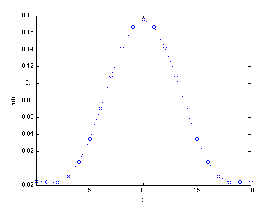
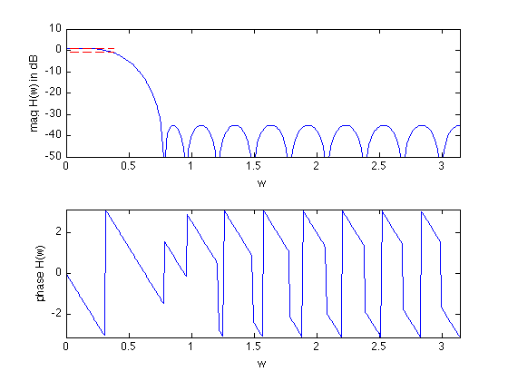

% "Filter design" lecture notes (EE364) by S. Boyd % (figures are generated) % % Designs a linear phase FIR lowpass filter such that it: % - minimizes maximum stopband attenuation % - has a constraint on the maximum passband ripple % % This is a convex problem (when sampled it can be represented as an LP). % % minimize max |H(w)| for w in the stopband % s.t. 1/delta <= |H(w)| <= delta for w in the passband % % where H is the frequency response function and variable is % h (the filter impulse response). delta is allowed passband ripple. % % Written for CVX by Almir Mutapcic 02/02/06 %******************************************************************** % user's filter specifications %******************************************************************** % filter order is 2n+1 (symmetric around the half-point) n = 10; wpass = 0.12*pi; % passband cutoff freq (in radians) wstop = 0.24*pi; % stopband start freq (in radians) ripple = 1; % (delta) max allowed passband ripple in dB % ideal passband gain is 0 dB %******************************************************************** % create optimization parameters %******************************************************************** N = 30*n; % freq samples (rule-of-thumb) w = linspace(0,pi,N); A = [ones(N,1) 2*cos(kron(w',[1:n]))]; % matrix of cosines % passband 0 <= w <= w_pass ind = find((0 <= w) & (w <= wpass)); % passband Ap = A(ind,:); % transition band is not constrained (w_pass <= w <= w_stop) % stopband (w_stop <= w) ind = find((wstop <= w) & (w <= pi)); % stopband As = A(ind,:); %******************************************************************** % optimization %******************************************************************** % formulate and solve the linear-phase lowpass filter design cvx_begin variable h(n+1,1); minimize(norm(As*h,Inf)) subject to 10^(-ripple/20) <= Ap*h <= 10^(ripple/20); cvx_end % check if problem was successfully solved disp(['Problem is ' cvx_status]) if ~strfind(cvx_status,'Solved') return else fprintf(1,'The minimum attenuation in the stopband is %3.2f dB.\n\n',... 20*log10(cvx_optval)); % construct the full impulse response h = [flipud(h(2:end)); h]; end %******************************************************************** % plots %******************************************************************** figure(1) % FIR impulse response plot(-n:n,h','o',[-n:n;-n:n],[zeros(1,2*n+1);h'],'b:',[-n-1,n+1],[0,0],'k-'); xlabel('t'), ylabel('h(t)') set(gca,'XLim',[-n-1,n+1]) figure(2) % frequency response H = exp(-j*kron(w',[0:2*n]))*h; % magnitude subplot(2,1,1) plot(w,20*log10(abs(H)),... [0 wpass],[ripple ripple],'r--',... [0 wpass],[-ripple -ripple],'r--'); axis([0,pi,-50,10]) xlabel('w'), ylabel('mag H(w) in dB') % phase subplot(2,1,2) plot(w,angle(H)) axis([0,pi,-pi,pi]) xlabel('w'), ylabel('phase H(w)')
Calling Mosek 9.1.9: 756 variables, 240 equality constraints
For improved efficiency, Mosek is solving the dual problem.
------------------------------------------------------------
MOSEK Version 9.1.9 (Build date: 2019-11-21 11:32:15)
Copyright (c) MOSEK ApS, Denmark. WWW: mosek.com
Platform: MACOSX/64-X86
Problem
Name :
Objective sense : min
Type : CONIC (conic optimization problem)
Constraints : 240
Cones : 228
Scalar variables : 756
Matrix variables : 0
Integer variables : 0
Optimizer started.
Presolve started.
Linear dependency checker started.
Linear dependency checker terminated.
Eliminator started.
Freed constraints in eliminator : 0
Eliminator terminated.
Eliminator - tries : 1 time : 0.00
Lin. dep. - tries : 1 time : 0.00
Lin. dep. - number : 0
Presolve terminated. Time: 0.00
Problem
Name :
Objective sense : min
Type : CONIC (conic optimization problem)
Constraints : 240
Cones : 228
Scalar variables : 756
Matrix variables : 0
Integer variables : 0
Optimizer - threads : 8
Optimizer - solved problem : the primal
Optimizer - Constraints : 12
Optimizer - Cones : 228
Optimizer - Scalar variables : 528 conic : 456
Optimizer - Semi-definite variables: 0 scalarized : 0
Factor - setup time : 0.00 dense det. time : 0.00
Factor - ML order time : 0.00 GP order time : 0.00
Factor - nonzeros before factor : 78 after factor : 78
Factor - dense dim. : 0 flops : 7.20e+04
ITE PFEAS DFEAS GFEAS PRSTATUS POBJ DOBJ MU TIME
0 2.3e+02 1.1e+00 1.0e+00 0.00e+00 0.000000000e+00 0.000000000e+00 1.0e+00 0.00
1 1.6e+02 7.8e-01 5.6e-01 9.16e+00 -5.795077210e-01 -4.726720519e-02 7.0e-01 0.01
2 3.0e+01 1.5e-01 1.9e-02 1.83e+00 -8.741300310e-02 -8.133214956e-02 1.3e-01 0.01
3 2.0e+01 1.0e-01 8.5e-03 2.90e+00 -4.012749313e-02 -3.704675033e-02 9.0e-02 0.01
4 1.2e+01 6.1e-02 3.6e-03 1.90e+00 -2.502064188e-02 -2.352422328e-02 5.4e-02 0.01
5 6.3e+00 3.1e-02 1.2e-03 1.35e+00 -2.106833753e-02 -2.052353467e-02 2.8e-02 0.01
6 1.6e+00 7.8e-03 1.3e-04 1.18e+00 -1.773044194e-02 -1.773278508e-02 7.0e-03 0.01
7 5.5e-01 2.7e-03 2.2e-05 1.03e+00 -1.751452393e-02 -1.755166447e-02 2.4e-03 0.01
8 9.9e-02 4.9e-04 1.3e-06 1.01e+00 -1.745869549e-02 -1.747115767e-02 4.4e-04 0.01
9 2.8e-02 1.4e-04 1.5e-07 1.00e+00 -1.747206379e-02 -1.747652802e-02 1.2e-04 0.02
10 4.3e-03 2.1e-05 8.6e-09 1.00e+00 -1.747527281e-02 -1.747596758e-02 1.9e-05 0.02
11 1.5e-04 7.6e-07 4.4e-11 1.00e+00 -1.747615732e-02 -1.747618518e-02 6.7e-07 0.02
12 3.1e-07 1.5e-09 3.9e-15 1.00e+00 -1.747619656e-02 -1.747619661e-02 1.3e-09 0.02
Optimizer terminated. Time: 0.02
Interior-point solution summary
Problem status : PRIMAL_AND_DUAL_FEASIBLE
Solution status : OPTIMAL
Primal. obj: -1.7476196558e-02 nrm: 1e+00 Viol. con: 1e-08 var: 5e-11 cones: 0e+00
Dual. obj: -1.7476196613e-02 nrm: 2e-01 Viol. con: 0e+00 var: 7e-11 cones: 0e+00
Optimizer summary
Optimizer - time: 0.02
Interior-point - iterations : 12 time: 0.02
Basis identification - time: 0.00
Primal - iterations : 0 time: 0.00
Dual - iterations : 0 time: 0.00
Clean primal - iterations : 0 time: 0.00
Clean dual - iterations : 0 time: 0.00
Simplex - time: 0.00
Primal simplex - iterations : 0 time: 0.00
Dual simplex - iterations : 0 time: 0.00
Mixed integer - relaxations: 0 time: 0.00
------------------------------------------------------------
Status: Solved
Optimal value (cvx_optval): +0.0174762
Problem is Solved
The minimum attenuation in the stopband is -35.15 dB.
 